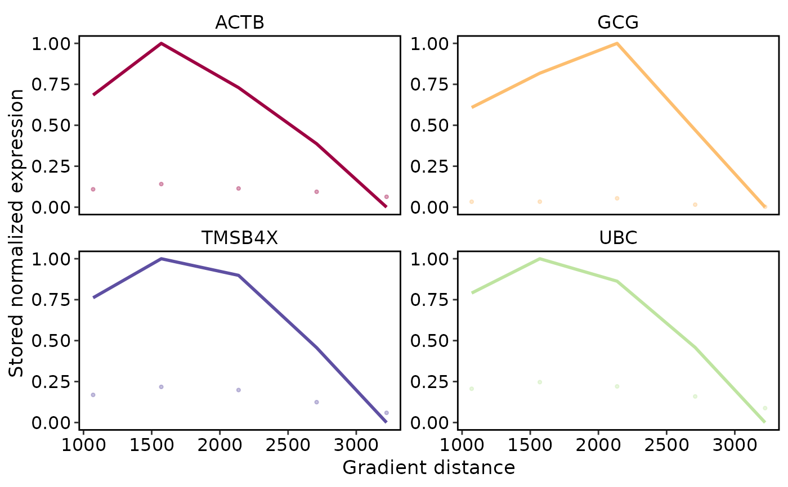
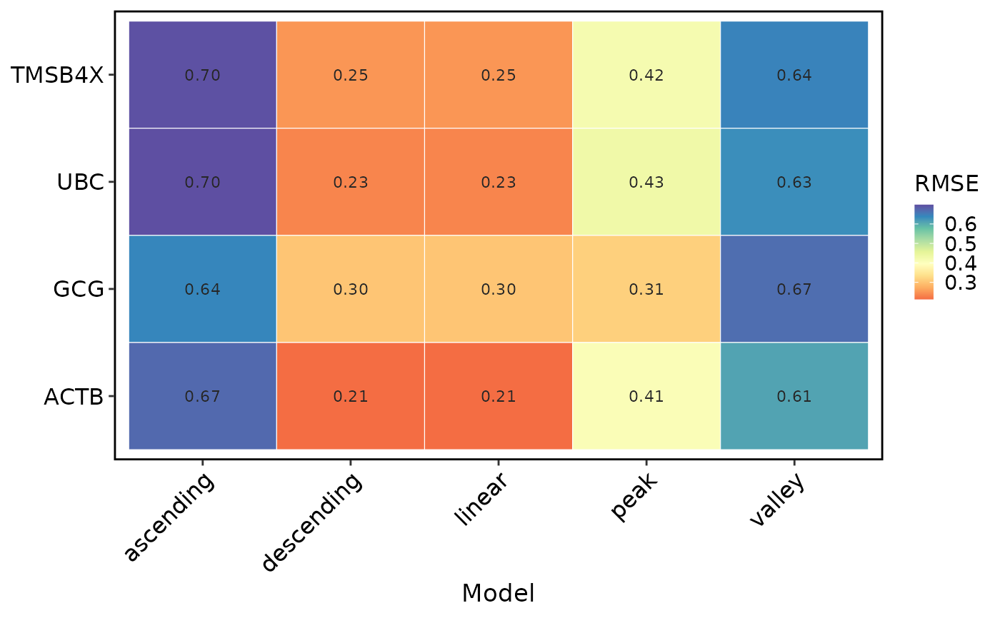

Plot spatial gradient screening results
Source:R/RunSpatialGradientFeatures.R
SpatialGradientPlot.RdVisualize normalized results produced by RunSpatialGradientFeatures(). The
plot reads only the stored screening, summary, and model-fit tables; it does
not refetch expression from the object's current assay or layer. The model
view displays the stored model-matching error (RMSE) for each feature.
Usage
SpatialGradientPlot(
object,
result_name = NULL,
plot_type = c("summary", "line", "model"),
features = NULL,
nfeatures = 4,
palette = "Spectral",
palcolor = NULL,
legend.position = "right",
theme_use = "theme_scop",
theme_args = list(),
line_size = 1,
line_alpha = 0.35,
line_fit = c("stored", "lm"),
nrow = NULL,
ncol = NULL,
srt = NULL
)Arguments
- object
A
Seuratobject containing stored gradient results.- result_name
Stored spatial gradient result name. If
NULL, the latest stored result is used.- plot_type
Plot type:
"summary","line", or"model".- features
Variables to plot. If
NULL, top variables from the stored result are used.- nfeatures
Number of top variables used when
features = NULL.- palette, palcolor
Color palette passed to SCOP plotting helpers.
- legend.position
Legend position for line, summary, and model plots.
- theme_use
Theme name or function.
- theme_args
Additional theme arguments.
- line_size
Size of fitted gradient lines.
- line_alpha
Alpha for raw value points.
- line_fit
Gradient line source.
"stored"uses the savedscreening$estimatevalues produced by the selected backend."lm"draws a fresh linear fit fromscreening$value, which is useful for showing a simple monotonic trend even when the backend stores a smoothed curve.- nrow, ncol
Layout controls for multi-feature plots.
- srt
Deprecated alias for
object; supply exactly one of the two. It will be removed in scop 1.0.0.
Examples
Restored example output generated on 2026-10-10 from SCOP 151e7134c. These historical examples have not been revalidated against the current release. Current usage and arguments are documented above.
data(visium_human_pancreas_sub)
spatial <- visium_human_pancreas_sub
counts <- GetAssayData5(spatial, assay = "Spatial", layer = "counts")
gradient_features <- names(sort(Matrix::rowSums(counts), decreasing = TRUE))[
seq_len(min(8L, nrow(counts)))
]
# Use a diagonal example axis without permutation testing.
spatial <- RunSpatialGradientFeatures(
spatial,
reference = "trajectory",
backend = "cpp",
result_name = "example_axis",
variables = gradient_features,
start = c(min(spatial$x), min(spatial$y)),
end = c(max(spatial$x), max(spatial$y)),
layer = "counts",
coord.cols = c("x", "y"),
n_random = 0,
n_bins = 5,
min_spots = 3,
sign_threshold = 1,
nfeatures = 4,
verbose = FALSE
)
SpatialGradientPlot(spatial, plot_type = "line")

SpatialGradientPlot(spatial, plot_type = "model")
